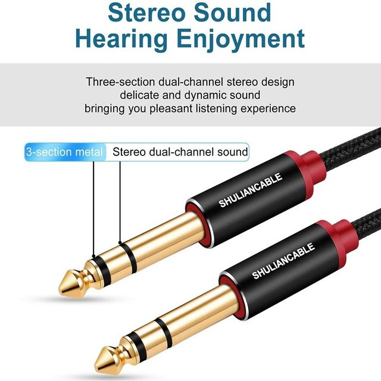
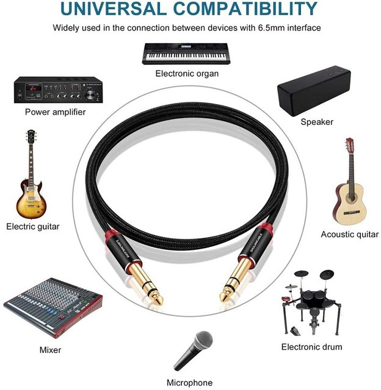
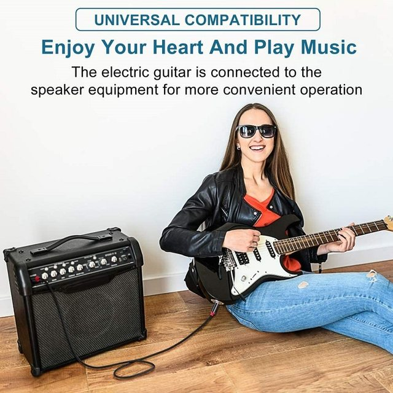
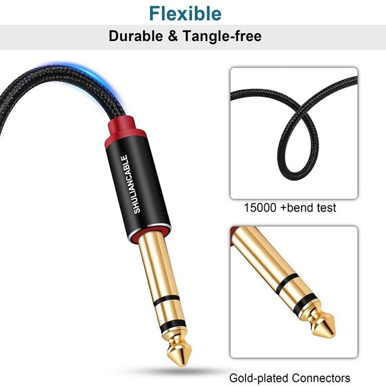
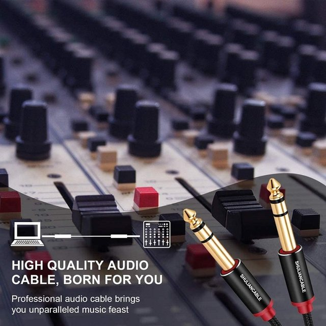
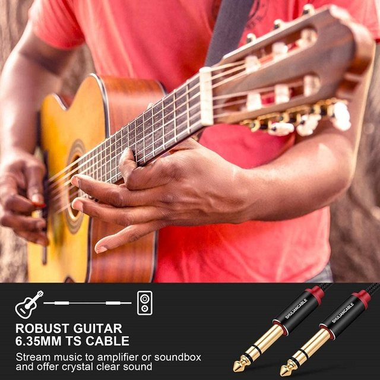

Product description
6.35mm guitar cable : Gold-plated 6.35mm jack 1/4 TRS cable. This jumper is equipped with a 1/4 TRS connector. It is the connection between professional audio and DJ equipment
Wide Compatibility: Compatible with power amplifiers, audio equipment, mixers, synthesizers, electric pianos, keyboards, classical guitars, and other professional audio equipment
fake sound quality : Gold-plated connections are corrosion-resistant and guarantee optimal sound quality; The pure copper inner shield is silent and offers excellent performance, ideal for digital or analog signals
High quality material : Oxygen-free copper ensures maximum electrical conductivity and durability; The aluminum alloy housing and nylon braid prevent cables from being cut when passing sharp edges
Guarantee : Every cable is subjected to 5 strict quality controls during the production process. Every feature is tested to ensure the best build quality





